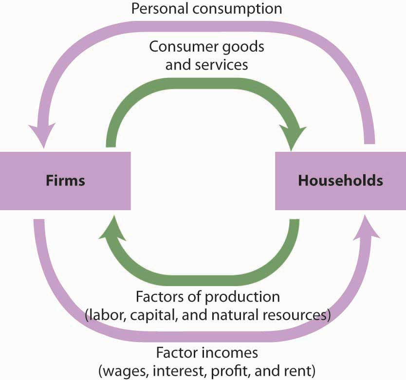
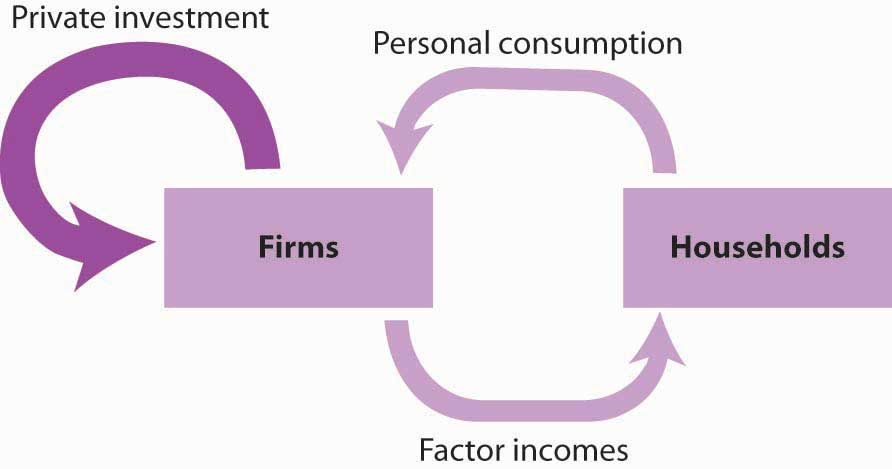
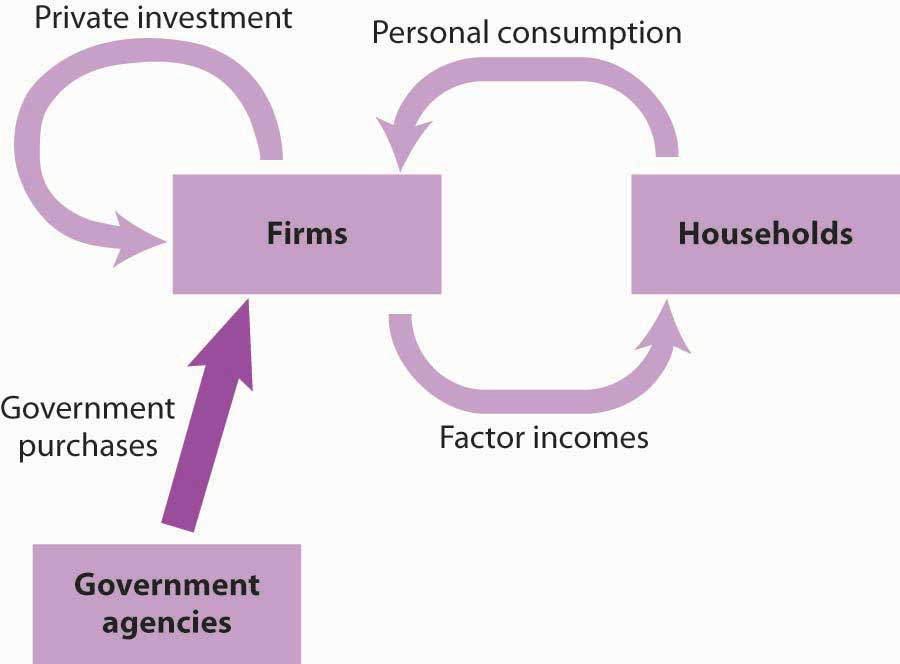
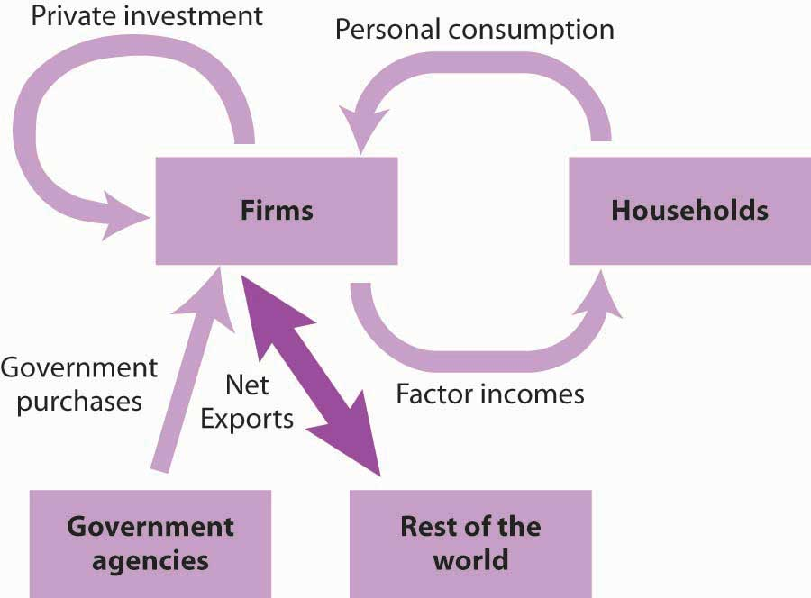
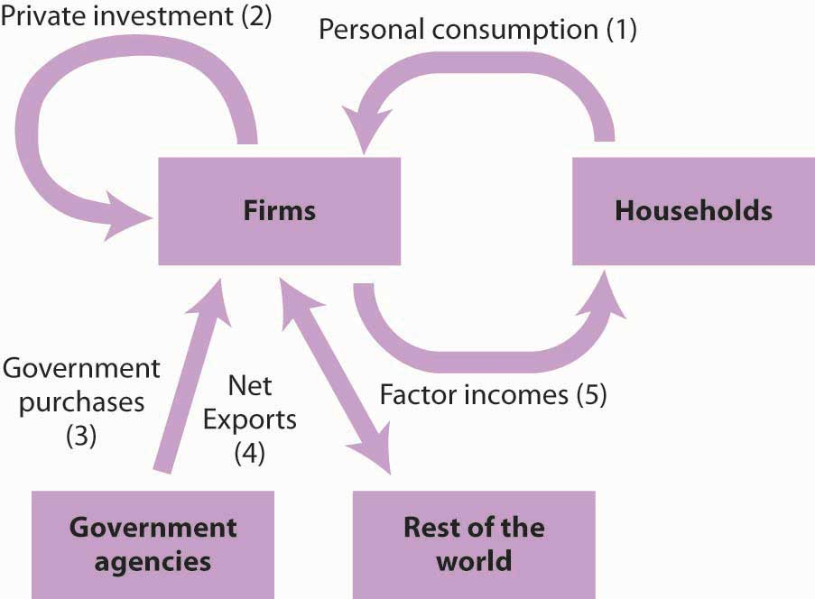
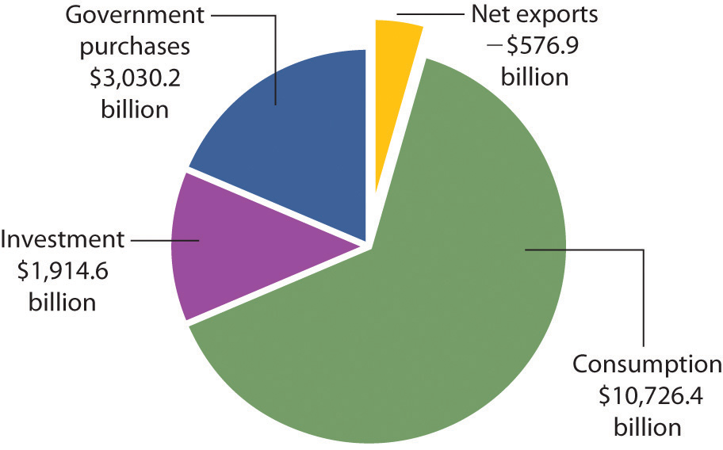

It is early morning when a half-dozen senior officials enter the room at the Commerce Department in Washington. Once inside, they will have no communication with the outside world until they have completed their work later that day. They will have no telephone, no computer links. They will be able to slip out to an adjoining restroom, but only in pairs. It is no wonder the room is called “the Lockup.” The Lockup produces one of the most important indicators of economic activity we have: the official estimate of the value of the economy’s total output, known as its gross domestic product (GDP).
When the team has finished its computations, the results will be placed in a sealed envelope. A government messenger will hand carry the envelope to the Executive Office Building and deliver it to a senior adviser to the president of the United States. The adviser will examine its contents, then carry it across the street to the White House and give it to the president.
The senior officials who meet in secret to compute GDP are not spies; they are economists. The adviser who delivers the estimate to the president is the chairman of the Council of Economic Advisers.
The elaborate precautions for secrecy do not end there. At 7:30 the next morning, journalists from all over the world will gather in an electronically sealed auditorium at the Commerce Department. There they will be given the GDP figure and related economic indicators, along with an explanation. The reporters will have an hour to prepare their reports, but they will not be able to communicate with anyone else until an official throws the switch at 8:30. At that instant their computers will connect to their news services, and they will be able to file their reports. These will be major stories on the Internet and in the next editions of the nation’s newspapers; the estimate of the previous quarter’s GDP will be one of the lead items on television and radio news broadcasts that day.
The clandestine preparations for the release of quarterly GDP figures reflect the importance of this indicator. The estimate of GDP provides the best available reading of macroeconomic performance. It will affect government policy, and it will influence millions of decisions in the private sector. Prior knowledge of the GDP estimate could be used to anticipate the response in the stock and bond markets, so great care is taken that only a handful of trusted officials have access to the information until it is officially released.
The GDP estimate took on huge significance in the fall of 2008 as the United States and much of the rest of the world went through the wrenching experience of the worst financial crisis since the Great Depression of the 1930s. The expectation that the financial crisis would lead to an economic collapse was widespread, and the quarterly announcements of GDP figures were more anxiously awaited than ever.
The primary measure of the ups and downs of economic activity—the business cycle—is real GDP. When an economy’s output is rising, the economy creates more jobs, more income, and more opportunities for people. In the long run, an economy’s output and income, relative to its population, determine the material standard of living of its people.
Clearly GDP is an important indicator of macroeconomic performance. It is the topic we will consider in this chapter. We will learn that GDP can be measured either in terms of the total value of output produced or as the total value of income generated in producing that output. We will begin with an examination of measures of GDP in terms of output. Our initial focus will be on nominal GDP: the value of total output measured in current prices. We will turn to real GDP—a measure of output that has been adjusted for price level changes—later in the chapter. We will refer to nominal GDP simply as GDP. When we discuss the real value of the measure, we will call it real GDP.
An economy produces a mind-boggling array of goods and services every year. For example, Domino’s Pizza produces hundreds of millions of pizzas. The United States Steel Corporation, the nation’s largest steel company, produces tens of millions of tons of steel. A small logging company in Colorado produces a couple million board feet of lumber. A university football team draws more than half a million fans to its home games. A pediatric nurse in Los Angeles delivers hundreds of babies and takes care of several hundred additional patients. A list of all the goods and services an economy produces in any year would be virtually endless.
So—what kind of year is the year we are looking at? We would not get very far trying to wade through a list of all the goods and services produced that year. It is helpful to have instead a single number that measures total output in the economy; that number is GDP.
We can divide the goods and services produced during any period into four broad components, based on who buys them. These components of GDP are personal consumption (C), gross private domestic investment (I), government purchases (G), and net exports (Xn). Thus
Equation 21.1
We will examine each of these components, and we will see how each fits into the pattern of macroeconomic activity. Before we begin, it will be helpful to distinguish between two types of variables: stocks and flows. A flow variableA variable that is measured over a specific period of time. is a variable that is measured over a specific period of time. A stock variableA variable that is independent of time. is a variable that is independent of time. Income is an example of a flow variable. To say one’s income is, for example, $1,000 is meaningless without a time dimension. Is it $1,000 per hour? Per day? Per week? Per month? Until we know the time period, we have no idea what the income figure means. The balance in a checking account is an example of a stock variable. When we learn that the balance in a checking account is $1,000, we know precisely what that means; we do not need a time dimension. We will see that stock and flow variables play very different roles in macroeconomic analysis.
Personal consumptionA flow variable that measures the value of goods and services purchased by households during a time period. is a flow variable that measures the value of goods and services purchased by households during a time period. Purchases by households of groceries, health-care services, clothing, and automobiles—all are counted as consumption.
The production of consumer goods and services accounts for about 70% of total output. Because consumption is such a large part of GDP, economists seeking to understand the determinants of GDP must pay special attention to the determinants of consumption. In a later chapter we will explore these determinants and the impact of consumption on economic activity.
Personal consumption represents a demand for goods and services placed on firms by households. In the chapter on demand and supply, we saw how this demand could be presented in a circular flow model of the economy. Figure 21.1 "Personal Consumption in the Circular Flow" presents a circular flow model for an economy that produces only personal consumption goods and services. (We will add the other components of GDP to the circular flow as we discuss them.) Spending for these goods flows from households to firms; it is the arrow labeled “Personal consumption.” Firms produce these goods and services using factors of production: labor, capital, and natural resources. These factors are ultimately owned by households. The production of goods and services thus generates income to households; we see this income as the flow from firms to households labeled “Factor incomes” in the exhibit.
Figure 21.1 Personal Consumption in the Circular Flow
Personal consumption spending flows from households to firms. In return, consumer goods and services flow from firms to households. To produce the goods and services households demand, firms employ factors of production owned by households. There is thus a flow of factor services from households to firms, and a flow of payments of factor incomes from firms to households.
In exchange for payments that flow from households to firms, there is a flow of consumer goods and services from firms to households. This flow is shown in Figure 21.1 "Personal Consumption in the Circular Flow" as an arrow going from firms to households. When you buy a soda, for example, your payment to the store is part of the flow of personal consumption; the soda is part of the flow of consumer goods and services that goes from the store to a household—yours.
Similarly, the lower arrow in Figure 21.1 "Personal Consumption in the Circular Flow" shows the flow of factors of production—labor, capital, and natural resources—from households to firms. If you work for a firm, your labor is part of this flow. The wages you receive are part of the factor incomes that flow from firms to households.
There is a key difference in our interpretation of the circular flow picture in Figure 21.1 "Personal Consumption in the Circular Flow" from our analysis of the same model in the demand and supply chapter. There, our focus was microeconomics, which examines individual units of the economy. In thinking about the flow of consumption spending from households to firms, we emphasized demand and supply in particular markets—markets for such things as blue jeans, haircuts, and apartments. In thinking about the flow of income payments from firms to households, we focused on the demand and supply for particular factors of production, such as textile workers, barbers, and apartment buildings. Because our focus now is macroeconomics, the study of aggregates of economic activity, we will think in terms of the total of personal consumption and the total of payments to households.
Gross private domestic investmentThe value of all goods produced during a period for use in the production of other goods and services. is the value of all goods produced during a period for use in the production of other goods and services. Like personal consumption, gross private domestic investment is a flow variable. It is often simply referred to as “private investment.” A hammer produced for a carpenter is private investment. A printing press produced for a magazine publisher is private investment, as is a conveyor-belt system produced for a manufacturing firm. Capital includes all the goods that have been produced for use in producing other goods; it is a stock variable. Private investment is a flow variable that adds to the stock of capital during a period.
The term “investment” can generate confusion. In everyday conversation, we use the term “investment” to refer to uses of money to earn income. We say we have invested in a stock or invested in a bond. Economists, however, restrict “investment” to activities that increase the economy’s stock of capital. The purchase of a share of stock does not add to the capital stock; it is not investment in the economic meaning of the word. We refer to the exchange of financial assets, such as stocks or bonds, as financial investment to distinguish it from the creation of capital that occurs as the result of investment. Only when new capital is produced does investment occur. Confusing the economic concept of private investment with the concept of financial investment can cause misunderstanding of the way in which key components of the economy relate to one another.
Gross private domestic investment includes three flows that add to or maintain the nation’s capital stock: expenditures by business firms on new buildings, plants, tools, equipment, and software that will be used in the production of goods and services; expenditures on new residential housing; and changes in business inventories. Any addition to a firm’s inventories represents an addition to investment; a reduction subtracts from investment. For example, if a clothing store stocks 1,000 pairs of jeans, the jeans represent an addition to inventory and are part of gross private domestic investment. As the jeans are sold, they are subtracted from inventory and thus subtracted from investment.
By recording additions to inventories as investment and reductions from inventories as subtractions from investment, the accounting for GDP records production in the period in which it occurs. Suppose, for example, that Levi Strauss manufactures 1 million pairs of jeans late in 2011 and distributes them to stores at the end of December. The jeans will be added to inventory; they thus count as investment in 2011 and enter GDP for that year. Suppose they are sold in January 2012. They will be counted as consumption in GDP for 2012 but subtracted from inventory, and from investment. Thus, the production of the jeans will add to GDP in 2011, when they were produced. They will not count in 2012, save for any increase in the value of the jeans resulting from the services provided by the retail stores that sold them.
Private investment accounts for about 15% of GDP—but, at times, even less. Despite its relatively small share of total economic activity, private investment plays a crucial role in the macroeconomy for two reasons:
Private investment represents a demand placed on firms for the production of capital goods. While it is a demand placed on firms, it flows from firms. In the circular flow model in Figure 21.2 "Private Investment in the Circular Flow", we see a flow of investment going from firms to firms. The production of goods and services for consumption generates factor incomes to households; the production of capital goods for investment generates income to households as well.
Figure 21.2 Private Investment in the Circular Flow
Private investment constitutes a demand placed on firms by other firms. It also generates factor incomes for households. To simplify the diagram, only the spending flows are shown—the corresponding flows of goods and services have been omitted.
Figure 21.2 "Private Investment in the Circular Flow" shows only spending flows and omits the physical flows represented by the arrows in Figure 21.1 "Personal Consumption in the Circular Flow". This simplification will make our analysis of the circular flow model easier. It will also focus our attention on spending flows, which are the flows we will be studying.
Government agencies at all levels purchase goods and services from firms. They purchase office equipment, vehicles, buildings, janitorial services, and so on. Many government agencies also produce goods and services. Police departments produce police protection. Public schools produce education. The National Aeronautics and Space Administration (NASA) produces space exploration.
Government purchasesThe sum of purchases of goods and services from firms by government agencies plus the total value of output produced by government agencies themselves during a time period. are the sum of purchases of goods and services from firms by government agencies plus the total value of output produced by government agencies themselves during a time period. Government purchases make up about 20% of GDP.
Government purchases are not the same thing as government spending. Much government spending takes the form of transfer paymentsPayments that do not require the recipient to produce a good or service in order to receive them., which are payments that do not require the recipient to produce a good or service in order to receive them. Transfer payments include Social Security and other types of assistance to retired people, welfare payments to poor people, and unemployment compensation to people who have lost their jobs. Transfer payments are certainly significant—they account for roughly half of all federal government spending in the United States. They do not count in a nation’s GDP, because they do not reflect the production of a good or service.
Government purchases represent a demand placed on firms, represented by the flow shown in Figure 21.3 "Government Purchases in the Circular Flow". Like all the components of GDP, the production of goods and services for government agencies creates factor incomes for households.
Figure 21.3 Government Purchases in the Circular Flow
Purchases of goods and services by government agencies create demands on firms. As firms produce these goods and services, they create factor incomes for households.
Sales of a country’s goods and services to buyers in the rest of the world during a particular time period represent its exportsSales of a country’s goods and services to buyers in the rest of the world during a particular time period.. A purchase by a Japanese buyer of a Ford Taurus produced in the United States is a U.S. export. Exports also include such transactions as the purchase of accounting services from a New York accounting firm by a shipping line based in Hong Kong or the purchase of a ticket to Disney World by a tourist from Argentina. ImportsPurchases of foreign-produced goods and services by a country’s residents during a period. are purchases of foreign-produced goods and services by a country’s residents during a period. United States imports include such transactions as the purchase by Americans of cars produced in Japan or tomatoes grown in Mexico or a stay in a French hotel by a tourist from the United States. Subtracting imports from exports yields net exportsExports minus imports..
Equation 21.2
In 2011, foreign buyers purchased $2,087.5 billion worth of goods and services from the United States. In the same year, U.S. residents, firms, and government agencies purchased $2,664.4 billion worth of goods and services from foreign countries. The difference between these two figures, −$576.9 billion, represented the net exports of the U.S. economy in 2011. Net exports were negative because imports exceeded exports. Negative net exports constitute a trade deficitNegative net exports.. The amount of the deficit is the amount by which imports exceed exports. When exports exceed imports there is a trade surplusPositive net exports.. The magnitude of the surplus is the amount by which exports exceed imports.
The United States has recorded more deficits than surpluses since World War II, but the amounts have typically been relatively small, only a few billion dollars. The trade deficit began to soar, however, in the 1980s and again in the 2000s. We will examine the reasons for persistent trade deficits in another chapter. The rest of the world plays a key role in the domestic economy and, as we will see later in the book, there is nothing particularly good or bad about trade surpluses or deficits. Goods and services produced for export represent roughly 14% of GDP, and the goods and services the United States imports add significantly to our standard of living.
In the circular flow diagram in Figure 21.4 "Net Exports in the Circular Flow", net exports are shown with an arrow connecting firms to the rest of the world. The balance between the flows of exports and imports is net exports. When there is a trade surplus, net exports are positive and add spending to the circular flow. A trade deficit implies negative net exports; spending flows from firms to the rest of the world.
Figure 21.4 Net Exports in the Circular Flow
Net exports represent the balance between exports and imports. Net exports can be positive or negative. If they are positive, net export spending flows from the rest of the world to firms. If they are negative, spending flows from firms to the rest of the world.
The production of goods and services for personal consumption, private investment, government purchases, and net exports makes up a nation’s GDP. Firms produce these goods and services in response to demands from households (personal consumption), from other firms (private investment), from government agencies (government purchases), and from the rest of the world (net exports). All of this production creates factor income for households. Figure 21.5 "Spending in the Circular Flow Model" shows the circular flow model for all the spending flows we have discussed. Each flow is numbered for use in the exercise at the end of this section.
Figure 21.5 Spending in the Circular Flow Model
GDP equals the sum of production by firms of goods and services for personal consumption (1), private investment (2), government purchases (3), and net exports (4). The circular flow model shows these flows and shows that the production of goods and services generates factor incomes (5) to households.
The circular flow model identifies some of the forces at work in the economy, forces that we will be studying in later chapters. For example, an increase in any of the flows that place demands on firms (personal consumption, private investment, government purchases, and exports) will induce firms to expand their production. This effect is characteristic of the expansion phase of the business cycle. An increase in production will require firms to employ more factors of production, which will create more income for households. Households are likely to respond with more consumption, which will induce still more production, more income, and still more consumption. Similarly, a reduction in any of the demands placed on firms will lead to a reduction in output, a reduction in firms’ use of factors of production, a reduction in household incomes, a reduction in income, and so on. This sequence of events is characteristic of the contraction phase of the business cycle. Much of our work in macroeconomics will involve an analysis of the forces that prompt such changes in demand and an examination of the economy’s response to them.
Figure 21.6 "Components of GDP, 2011 in Billions of Dollars" shows the size of the components of GDP in 2011. We see that the production of goods and services for personal consumption accounted for about 70% of GDP. Imports exceeded exports, so net exports were negative.
Figure 21.6 Components of GDP, 2011 in Billions of Dollars
Consumption makes up the largest share of GDP. Net exports were negative in 2011. Total GDP—the sum of personal consumption, private investment, government purchases, and net exports—equaled $15,094.4 billion in 2011.
Source: Bureau of Economic Analysis, National Income and Product Accounts, Table 1.1.5 (revised February 29, 2012)
GDP is the total value of all final goods and services produced during a particular period valued at prices in that period. That is not the same as the total value of all goods and services produced during a period. This distinction gives us another method of estimating GDP in terms of output.
Suppose, for example, that a logger cuts some trees and sells the logs to a sawmill. The mill makes lumber and sells it to a construction firm, which builds a house. The market price for the lumber includes the value of the logs; the price of the house includes the value of the lumber. If we try to estimate GDP by adding the value of the logs, the lumber, and the house, we would be counting the lumber twice and the logs three times. This problem is called “double counting,” and the economists who compute GDP seek to avoid it.
In the case of logs used for lumber and lumber produced for a house, GDP would include the value of the house. The lumber and the logs would not be counted as additional production because they are intermediate goods that were produced for use in building the house.
Another approach to estimating the value of final production is to estimate for each stage of production the value addedThe amount by which the value of a firm’s output exceeds the value of the goods and services the firm purchases from other firms., the amount by which the value of a firm’s output exceeds the value of the goods and services the firm purchases from other firms. Table 21.1 "Final Value and Value Added" illustrates the use of value added in the production of a house.
Table 21.1 Final Value and Value Added
| Good | Produced by | Purchased by | Price | Value Added |
|---|---|---|---|---|
| Logs | Logger | Sawmill | $12,000 | $12,000 |
| Lumber | Sawmill | Construction firm | $25,000 | $13,000 |
| House | Construction firm | Household | $125,000 | $100,000 |
| Final Value | $125,000 | |||
| Sum of Values Added | $125,000 |
If we sum the value added at each stage of the production of a good or service, we get the final value of the item. The example shown here involves the construction of a house, which is produced from lumber that is, in turn, produced from logs.
Suppose the logs produced by the logger are sold for $12,000 to a mill, and that the mill sells the lumber it produces from these logs for $25,000 to a construction firm. The construction firm uses the lumber to build a house, which it sells to a household for $125,000. (To simplify the example, we will ignore inputs other than lumber that are used to build the house.) The value of the final product, the house, is $125,000. The value added at each stage of production is estimated as follows:
The sum of values added at each stage ($12,000 + $13,000 + $100,000) equals the final value of the house, $125,000.
The value of an economy’s output in any period can thus be estimated in either of two ways. The values of final goods and services produced can be added directly, or the values added at each stage in the production process can be added. The Commerce Department uses both approaches in its estimate of the nation’s GDP.
While GDP represents the most commonly used measure of an economy’s output, economists sometimes use an alternative measure. Gross national product (GNP)The total value of final goods and services produced during a particular period with factors of production owned by the residents of a particular country. is the total value of final goods and services produced during a particular period with factors of production owned by the residents of a particular country.
The difference between GDP and GNP is a subtle one. The GDP of a country equals the value of final output produced within the borders of that country; the GNP of a country equals the value of final output produced using factors owned by residents of the country. Most production in a country employs factors of production owned by residents of that country, so the two measures overlap. Differences between the two measures emerge when production in one country employs factors of production owned by residents of other countries.
Suppose, for example, that a resident of Bellingham, Washington, owns and operates a watch repair shop across the Canadian–U.S. border in Victoria, British Columbia. The value of watch repair services produced at the shop would be counted as part of Canada’s GDP because they are produced in Canada. That value would not, however, be part of U.S. GDP. But, because the watch repair services were produced using capital and labor provided by a resident of the United States, they would be counted as part of GNP in the United States and not as part of GNP in Canada.
Because most production fits in both a country’s GDP as well as its GNP, there is seldom much difference between the two measures. The relationship between GDP and GNP is given by
Equation 21.3
In the third quarter of 2011, for example, GDP equaled $15,176.1 billion. We add income receipts of $792.2 billion earned by residents of the United States from the rest of the world and then subtract income payments of $524.9 billion that went from the United States to the rest of the world to get GNP of $15,443.4 billion for the third quarter of 2011. GNP is often used in international comparisons of income; we shall examine those later in this chapter.
Here is a two-part exercise.
Suppose you are given the following data for an economy:
| Personal consumption | $1,000 |
| Home construction | 100 |
| Increase in inventories | 40 |
| Equipment purchases by firms | 60 |
| Government purchases | 100 |
| Social Security payments to households | 40 |
| Government welfare payments | 100 |
| Exports | 50 |
| Imports | 150 |
Identify the number of the flow in Figure 21.5 "Spending in the Circular Flow Model" to which each of these items corresponds. What is the economy’s GDP?
Outside the United States, the value added tax (VAT) has become commonplace. Governments of more than 120 countries use it as their primary means of raising revenue. While the concept of the VAT originated in France in the 1920s, no country adopted it until after World War II. In 1948, France became the first country in the world to use the VAT. In 1967, Brazil became the first country in the Western Hemisphere to do so. The VAT spread to other western European and Latin American countries in the 1970s and 1980s and then to countries in the Asia/Pacific region, central European and former Soviet Union area, and Africa in the 1990s and early 2000s.
What is the VAT? It is equivalent to a sales tax on final goods and services but is collected at each stage of production.
Take the example given in Table 21.1 "Final Value and Value Added", which is a simplified illustration of a house built in three stages. If there were a sales tax of 10% on the house, the household buying it would pay $137,500, of which the construction firm would keep $125,000 of the total and turn $12,500 over to the government.
With a 10% VAT, the sawmill would pay the logger $13,200, of which the logger would keep $12,000 and turn $1,200 over to the government. The sawmill would sell the lumber to the construction firm for $27,500—keeping $26,200, which is the $25,000 for the lumber itself and $1,200 it already paid in tax. The government at this stage would get $1,300, the difference between the $2,500 the construction firm collected as tax and the $1,200 the sawmill already paid in tax to the logger at the previous stage. The household would pay the construction firm $137,500. Of that total, the construction firm would turn over to the government $10,000, which is the difference between the $12,500 it collected for the government in tax from the household and the $2,500 in tax that it already paid when it bought the lumber from the sawmill. The table below shows that in the end, the tax revenue generated by a 10% VAT is the same as that generated by a 10% tax on final sales.
Why bother to tax in stages instead of just on final sales? One reason is simply record keeping, since it may be difficult to determine in practice if any particular sale is the final one. In the example, the construction firm does not need to know if it is selling the house to a household or to some intermediary business.
Also, the VAT may lead to higher revenue collected. For example, even if somehow the household buying the house avoided paying the tax, the government would still have collected some tax revenue at earlier stages of production. With a tax on retail sales, it would have collected nothing. The VAT has another advantage from the point of view of government agencies. It has the appearance at each stage of taking a smaller share. The individual amounts collected are not as obvious to taxpayers as a sales tax might be.
| Good | Price | Value Added | Tax Collected | − Tax Already Paid | = Value Added Tax |
|---|---|---|---|---|---|
| Logs | $12,000 | $12,000 | $1,200 | − $0 | = $1,200 |
| Lumber | $25,000 | $13,000 | $2,500 | − $1,200 | = $1,300 |
| House | $125,000 | $100,000 | $12,500 | − $2,500 | = $10,000 |
| Total | $16,200 | −$3,700 | = $12,500 |
GDP equals $1,200 and is computed as follows (the numbers in parentheses correspond to the flows in Figure 21.5 "Spending in the Circular Flow Model"):
| Personal consumption (1) | $1,000 | |
| Private investment (2) | 200 | |
| Housing | 100 | |
| Equipment and software | 60 | |
| Inventory change | 40 | |
| Government purchases (3) | 100 | |
| Net exports (4) | −100 | |
| GDP | $1,200 | |
Notice that neither welfare payments nor Social Security payments to households are included. These are transfer payments, which are not part of the government purchases component of GDP.
Here is the table of value added.
| Good | Produced by | Purchased by | Price | Value Added |
|---|---|---|---|---|
| Raw milk | Dairy farm | Dairy | $1,000 | $1,000 |
| Cream | Dairy | Ice cream maker | 3,000 | 2,000 |
| Ice cream | Ice cream manufacturer | Grocery store | 7,000 | 4,000 |
| Retail ice cream | Grocery store | Consumer | 10,000 | 3,000 |
| Final Value | $10,000 | |||
| Sum of Values Added | $10,000 |
We saw in the last section that the production of goods and services generates factor incomes to households. The production of a given value of goods and services generates an equal value of total income. Gross domestic income (GDI)The total income generated in an economy by the production of final goods and services during a particular period. equals the total income generated in an economy by the production of final goods and services during a particular period. It is a flow variable. Because an economy’s total output equals the total income generated in producing that output, GDP = GDI. We can estimate GDP either by measuring total output or by measuring total income.
Consider a $4 box of Cheerios. It is part of total output and thus is part of GDP. Who gets the $4? Part of the answer to that question can be found by looking at the cereal box. Cheerios are made from oat flour, wheat starch, sugar, salt, and a variety of vitamins and minerals. Therefore, part of the $4 goes to the farmers who grew the oats, the wheat, and the beets or cane from which the sugar was extracted. Workers and machines at General Mills combined the ingredients, crafted all those little O’s, toasted them, and put them in a box. The workers were paid part of the $4 as wages. The owners of General Mills and the capital it used received part of the $4 as profit. The box containing the Cheerios was made from a tree, so a lumber company somewhere received part of the $4. The truck driver who brought the box of cereal to the grocery store got part of the $4, as did the owner of the truck itself and the owner of the oil that fueled the truck. The clerk who rang up the sale at the grocery store was paid part of the $4. And so on.
How much of the $4 was income generated in the production of the Cheerios? The answer is simple: all of it. Some of the money went to workers as wages. Some went to owners of the capital and natural resources used to produce it. Profits generated along the way went to the owners of the firms involved. All these items represent costs of producing the Cheerios and also represent income to households.
Part of the $4 cost of the Cheerios, while it makes up a portion of GDI, does not represent ordinary income actually earned by households. That part results from two other production costs: depreciation and taxes related to the production of the Cheerios. Nevertheless, they are treated as a kind of income; we will examine their role in GDI below.
As it is with Cheerios, so it is with everything else. The value of output equals the income generated as the output is produced.
Employee compensation is the largest among the components of factor income. Factor income also includes profit, rent, and interest. In addition, GDI includes charges for depreciation and taxes associated with production. Depreciation and production-related taxes, such as sales taxes, make up part of the cost of producing goods and services and must be accounted for in estimating GDI. We will discuss each of these components of GDI next.
Compensation of employees in the form of wages, salaries, and benefits makes up the largest single component of income generated in the production of GDP. In the third quarter of 2011, employee compensation represented 55% of GDI.
The structure of employee compensation has changed dramatically in the last several decades. In 1950, virtually all employee compensation—95% of it—came in the form of wages and salaries. The remainder, about 5%, came in the form of additional benefits such as employer contributions to retirement programs and health insurance. In 2011, the share of benefits was nearly 20% of total employee compensation.
The profit component of income earned by households equals total revenues of firms less costs as measured by conventional accounting. Profits amounted to about 17% of GDI in 2011, down sharply from five decades earlier, when profits represented about 25% of the income generated in GDI.Although reported separately by the Department of Commerce, we have combined proprietors’ income (typically independent business owners and farmers) with corporate profits to simplify the discussion.
Profits are the reward the owners of firms receive for being in business. The opportunity to earn profits is the driving force behind production in a market economy.
Rental income, such as the income earned by owners of rental housing or payments for the rent of natural resources, is the smallest component of GDI (less than 3%); it is the smallest of the income flows to households. The meaning of rent in the computation of GDI is the same as its meaning in conventional usage; it is a charge for the temporary use of some capital asset or natural resource.If you have studied microeconomics, you know that the term “rent” in economics has a quite different meaning. The national income and product accounts use the accounting, not the economic, meaning of “rent.”
Businesses both receive and pay interest. GDI includes net interest, which equals interest paid less interest received by domestic businesses, plus interest received from foreigners less interest paid to foreigners. Interest payments on mortgage and home improvement loans are counted as interest paid by businesses, because homeowners are treated as businesses in the income accounts. In 2011, net interest accounted for about 5% of GDI.
Over time the machinery and buildings that are used to produce goods and services wear out or become obsolete. A farmer’s tractor, for example, wears out as it is used. A technological change may make some equipment obsolete. The introduction of personal computers, for example, made the electric typewriters used by many firms obsolete. DepreciationA measure of the amount of capital that wears out or becomes obsolete during a period. is a measure of the amount of capital that wears out or becomes obsolete during a period. Depreciation is referred to in official reports as the consumption of fixed capital.
Depreciation is a cost of production, so it represents part of the price charged for goods and services. It is therefore counted as part of the income generated in the production of those goods and services. Depreciation represented about 13% of GDI in 2011.
The final component of the income measure of GDI is indirect business taxes.The adjustment for indirect business taxes includes two other minor elements: transfer payments made by business firms and surpluses or deficits of government enterprises. Indirect taxesTaxes imposed on the production or sale of goods and services or on other business activity. are taxes imposed on the production or sale of goods and services or on other business activity. (By contrast, a direct taxTaxes imposed directly on income. is a tax imposed directly on income; the personal income and corporate income taxes are direct taxes.) Indirect taxes, which include sales and excise taxes and property taxes, make up part of the cost to firms of producing goods and services. Like depreciation, they are part of the price of those goods and services and are therefore treated as part of the income generated in their production. Indirect business taxes amounted to nearly 8% of GDI in 2011.
Table 21.2 "GDP and GDI, 2011" shows the components of GDI in the third quarter of 2011. Employee compensation represented the largest share of GDI. The exhibit also shows the components of GDP for the same year.
In principle, GDP and GDI should be equal, but their estimated values never are, because the data come from different sources. Output data from a sample of firms are used to estimate GDP, while income data from a sample of households are used to estimate GDI. The difference is the statistical discrepancy shown in the right-hand column of Table 21.2 "GDP and GDI, 2011". Some of the difficulties with these data are examined in the Case in Point feature on discrepancies between GDP and GDI.
Table 21.2 GDP and GDI, 2011
| Gross domestic product | $15,176.1 | Gross domestic income | $15,214.8 |
| Personal consumption expenditures | $10,784.5 | Compensation of employees | 8,347.3 |
| Gross private domestic investment | $1,906.6 | ProfitsProfit is corporate profit ($1,519.3) plus proprietors’ income ($1,113.7), both with inventory valuation and capital consumption adjustment. | 2,633.0 |
| Government consumption expenditures and gross investment | $3,047.3 | Rental income of persons | 406.3 |
| Net exports of goods and services | −$562.3 | Net interest | 710.3 |
| Taxes on production and importsIndirect taxes include taxes on production and imports of $1,100.0 plus business transfer payments ($133.7) less subsidies ($64.2) and current surplus of government enterprise ($14.5). Prior to the 2003 National Income and Product Accounts (NIPA) revisions, the category “taxes on production and imports” was, with some technical and other minor adjustments, referred to as “indirect business taxes.” See Brent R. Moulton and Eugene P. Seskin, “Preview of the 2003 Comprehensive Revision of the National Income and Product Accounts,” Bureau of Economic Analysis, Survey of Current Business, June 2003, pp. 17–34. | 1,155.1 | ||
| Consumption of fixed capital (depreciation) | 1,962.8 | ||
| Statistical discrepancy | −38.7 |
The table shows the composition of GDP and GDI in the third quarter of 2011 (in billions of dollars at an annual rate). Notice the rough equality of the two measures. (They are not quite equal because of measurement errors; the difference is due to a statistical discrepancy and is reduced significantly over time as the data are revised.)
Source: Bureau of Economic Analysis, National Income and Product Accounts, Tables 1.10 and 1.1.5 (revised February 29, 2012).
We have seen that the production of goods and services generates income for households. Thus, the value of total output equals the value of total income in an economy. But we have also seen that our measure of total income, GDI, includes such things as depreciation and indirect business taxes that are not actually received by households. Households also receive some income, such as transfer payments, that does not count as part of GDP or GDI. Because the income households actually receive plays an important role in determining their consumption, it is useful to examine the relationship between a nation’s total output and the income households actually receive.
Table 21.3 "From GDP to Disposable Personal Income" traces the path we take in going from GDP to disposable personal incomeThe income households have available to spend on goods and services., which equals the income households have available to spend on goods and services. We first convert GDP to GNP and then subtract elements of GNP that do not represent income received by households and add payments such as transfer payments that households receive but do not earn in the production of GNP. Disposable personal income is either spent for personal consumption or saved by households.
Table 21.3 From GDP to Disposable Personal Income
| GDP + net factor earnings from abroad | = | gross national product (GNP) |
| GNP − depreciation (consumption of fixed capital) | = | net national product (NNP) |
| NNP − statistical discrepancy | = | national income (NI) |
| NI − income earned but not received [e.g., taxes on production and imports, social security payroll taxes, corporate profit taxes, and retained earnings] + transfer payments and other income received but not earned in the production of GNP | = | personal income (PI) |
| PI − personal income taxes | = | disposable personal income (DPI) |
GDP, a measure of total output, equals GDI, the total income generated in the production of goods and services in an economy. The chart traces the path from GDP to disposable personal income, which equals the income households actually receive. We first convert GDP to GNP. Then, we subtract depreciation to obtain net national product and subtract the statistical discrepancy to arrive at national income (i.e., gross national income [GNI] net of depreciation and the statistical discrepancy). Next, we subtract components of GNP and GNI that do not represent income actually received by households, such as taxes on production and imports, corporate profit and payroll taxes (contributions to social insurance), and corporate retained earnings. We add items such as transfer payments that are income to households but are not part of GNP and GNI. The adjustments shown are the most important adjustments in going from GNP and GNI to disposable personal income; several smaller adjustments (e.g., subsidies, business current transfer payments [net], and current surplus of government enterprises) have been omitted.
The following income data refer to the same economy for which you had output data in the first part of the previous Try It! Compute GDI from the data below and confirm that your result equals the GDP figure you computed in the previous Try It! Assume that GDP = GNP for this problem (that is, assume all factor incomes are earned and paid in the domestic economy).
| Employee compensation | $700 |
| Social Security payments to households | 40 |
| Welfare payments | 100 |
| Profits | 200 |
| Rental income | 50 |
| Net interest | 25 |
| Depreciation | 50 |
| Indirect taxes | 175 |
GDP equals GDI; at least, that is the way it is supposed to work. But in an enormously complex economy, the measurement of these two variables inevitably goes awry. Estimates of the two are never quite equal. In recent years, the absolute value of the gap has been quite sizable, while in other years, it has been quite small. For example, for the years 2006 through 2010, GDI has differed from GDP by −242.3, −12.0, −2.4, 77.4, and 0.8 billion per year, respectively.
Although the gap seems large at times, it represents a remarkably small fraction of measured activity—around 1% or less. Of course, 1% of a big number is still a big number. But it is important to remember that, relative to the size of the economy, the gap between GDI and GDP is not large. The gap is listed as a “statistical discrepancy” in the Department of Commerce reporting of the two numbers.
Why does the gap exist? From an accounting point of view, it should not. The total value of final goods and services produced must be equal to the total value of income generated in that production. But output is measured from sales and inventory figures collected from just 10% of commercial establishments. Preliminary income figures are obtained from household surveys, but these represent a tiny fraction of households. More complete income data are provided by income tax returns, but these are available to the economists who estimate GDI only after a two- to four-year delay.
The Department of Commerce issues revisions of its GDP and GDI estimates as more complete data become available. With each revision, the gap between GDP and GDI estimates is significantly reduced.
While GDP and GDI figures cannot provide precise measures of economic activity, they come remarkably close. Indeed, given that the numbers come from entirely different sources, the fact that they come as close as they do provides an impressive check of the accuracy of the department’s estimates of GDP and GDI.
GDI equals $1,200. Note that this value equals the value for GDP obtained from the estimate of output in the first part of the previous Try It! Here is the computation:
| Employee compensation | $700 |
| Profits | 200 |
| Rental income | 50 |
| Net interest | 25 |
| Depreciation | 50 |
| Indirect taxes | 175 |
| GDI | $1,200 |
Once again, note that Social Security and welfare payments to households are transfer payments. They do not represent payments to household factors of production for current output of goods and services, and therefore are not included in GDI.
GDP is the measure most often used to assess the economic well-being of a country. Besides measuring the pulse of a country, it is the figure used to compare living standards in different countries.
Of course, to use GDP as an indicator of overall economic performance, we must convert nominal GDP to real GDP, since nominal values can rise or fall simply as a result of changes in the price level. For example, the movie Avatar, released in 2009, brought in $761 million—the highest amount to date in gross box office receipts, while Gone with the Wind, released in 1939, earned only $199 million and ranks 117th in terms of nominal receipts. But does that mean that Avatar actually did better than Gone with the Wind? After all, the average price of a movie ticket in 1939 was about 25 cents. At the time of Avatar, the average ticket price was about $7.50. A better way to compare these two movies in terms of popularity is to control for the price of movie tickets—the same strategy that economists use with real GDP in order to determine whether output is rising or falling. Adjusting the nominal box-office receipts using 2012 movie prices to obtain real revenue reveals that in real terms Gone with the Wind continues to be the top real grosser of all time with real box-office receipts of about $1.6 billion. Avatar’s real box-office receipts amounted to a mere $776 million.Based on estimates at “Domestic Grosses Adjusted for Ticket Price Inflation,” Box Office Mojo, accessed April 10, 2012, http://boxofficemojo.com/alltime/adjusted.htm. As illustrated by this example on revenues from popular movies, we might draw erroneous conclusions about performance if we base them on nominal values instead of on real values. In contrast, real GDP, despite the problems with price indexes that were explained in another chapter, provides a reasonable measure of the total output of an economy, and changes in real GDP provide an indication of the direction of movement in total output.
We begin this section by noting some of the drawbacks of using real GDP as a measure of the economic welfare of a country. Despite these shortcomings, we will see that it probably remains our best single indicator of macroeconomic performance.
There are two measurement problems, other than those associated with adjusting for price level changes, in using real GDP to assess domestic economic performance.
The first estimate of real GDP for a calendar quarter is called the advance estimate. It is issued about a month after the quarter ends. To produce a measure so quickly, officials at the Department of Commerce must rely on information from relatively few firms and households. One month later, it issues a revised estimate, and a month after that it issues its final estimate. Often the advance estimate of GDP and the final estimate do not correspond. The recession of 2001, for example, began in March of that year. But the first estimates of real GDP for the second and third quarters of 2001 showed output continuing to rise. It was not until later revisions that it became clear that a recession had been under way.
But the revision story does not end there. Every summer, the Commerce Department issues revised figures for the previous two or three years. Once every five years, the department conducts an extensive analysis that traces flows of inputs and outputs throughout the economy. It focuses on the outputs of some firms that are inputs to other firms. In the process of conducting this analysis, the department revises real GDP estimates for the previous five years. Sometimes the revisions can paint a picture of economic activity that is quite different from the one given even by the revised estimates of GDP. For example, revisions of the data for the 1990–1991 recession issued several years later showed that the recession had been much more serious than had previously been apparent, and the recovery was more pronounced. Concerning the most recent recession, the first estimates of fourth quarter 2008 GDP showed that the U.S. economy shrank by 3.8%. The first revision, however, showed a drop of 6.8%, and the second revision showed a drop of 8.9%!
Another problem lies in estimating production in the service sector. The output of goods in an economy is relatively easy to compute. There are so many bushels of corn, so many pounds of beef. But what is the output of a bank? Of a hospital? It is easy to record the dollar value of output to enter in nominal GDP, but estimating the quantity of output to use in real GDP is quite another matter. In some cases, the Department of Commerce estimates service sector output based on the quantity of labor used. For example, if this technique were used in the banking industry and banking used 10% more labor, the department would report that production has risen 10%. If the number of employees remains unchanged, reported output remains unchanged. In effect, this approach assumes that output per worker—productivity—in those sectors remains constant when studies have indicated that productivity has increased greatly in the service sector. Since 1990 progress has been made in measurement in this area, which allows in particular for better estimation of productivity changes and price indexes for different service sector industries, but more remains to be done in this large sector of the U.S. economy.Jack E. Triplett and Barry P. Bosworth, “The State of Data for Services Productivity Measurement in the United States,” International Productivity Monitor 16 (Spring 2008): 53–70.
A second set of limitations of real GDP stems from problems inherent in the indicator itself. Real GDP measures market activity. Goods and services that are produced and exchanged in a market are counted; goods and services that are produced but that are not exchanged in markets are not.There are two exceptions to this rule. The value of food produced and consumed by farm households is counted in GDP. More important, an estimate of the rental values of owner-occupied homes is included. If a family rents a house, the rental payments are included in GDP. If a family lives in a house it owns, the Department of Commerce estimates what the house would rent for and then includes that rent in the GDP estimate, even though the house’s services were not exchanged in the marketplace.
Suppose you are considering whether to eat at home for dinner tonight or to eat out. You could cook dinner for yourself at a cost of $5 for the ingredients plus an hour or so of your time. Alternatively, you could buy an equivalent meal at a restaurant for perhaps $15. Your decision to eat out rather than cook would add $10 to the GDP.
But that $10 addition would be misleading. After all, if you had stayed home you might have produced an equivalent meal. The only difference is that the value of your time would not have been counted. But surely your time is not worthless; it is just not counted. Similarly, GDP does not count the value of your efforts to clean your own house, to wash your own car, or to grow your own vegetables. In general, GDP omits the entire value added by members of a household who do household work themselves.
There is reason to believe this omission is serious. Economists J. Steven Landefeld and Stephanie H. McCulla of the U.S. Bureau of Economic Analysis estimated in a 2000 paper the value of household output from 1946 to 1997. Their estimate of household output in 1946 was 50% of reported GDP. Since then, that percentage has fallen, because more women have entered the workforce, so that more production that once took place in households now occurs in the market. Households now eat out more, purchase more prepared foods at the grocery store, hire out child-care services they once performed themselves, and so on. Their estimate for 1997, for example, suggests that household production amounted to 36% of reported GDP.J. Steven Landefeld and Stephanie H. McCulla, “Accounting for Nonmarket Household Production within a National Accounts Framework,” Review of Income & Wealth 46, no. 3 (September 2000): 289–307.
This problem is especially significant when GDP is used to make comparisons across countries. In low-income countries, a much greater share of goods and services is not exchanged in a market. Estimates of GDP in such countries are adjusted to reflect nonmarket production, but these adjustments are inevitably imprecise.
Some production goes unreported in order to evade taxes or the law. It is not likely to be counted in GDP. Legal production for which income is unreported in order to evade taxes generally takes place in what is known as the “underground economy.” For example, a carpenter might build a small addition to a dentist’s house in exchange for orthodontic work for the carpenter’s children. Although income has been earned and output generated in this example of bartering, the transaction is unlikely to be reported for income tax or other purposes and thus is not counted in GDP. Illegal activities are not reported for income taxes for obvious reasons and are thus difficult to include in GDP.
Leisure is an economic good. All other things being equal, more leisure is better than less leisure.
But all other things are not likely to be equal when it comes to consuming leisure. Consuming more leisure means supplying less work effort. And that means producing less GDP. If everyone decided to work 10% fewer hours, GDP would fall. But that would not mean that people were worse off. In fact, their choice of more leisure would suggest they prefer the extra leisure to the goods and services they give up by consuming it. Consequently, a reduction in GDP would be accompanied by an increase in satisfaction, not a reduction.
Suppose a wave of burglaries were to break out across the United States. One would expect people to respond by buying more and louder burglar alarms, better locks, fiercer German shepherds, and more guard services than they had before. To the extent that they pay for these by dipping into savings rather than replacing other consumption, GDP increases. An epidemic might have much the same effect on GDP by driving up health-care spending. But that does not mean that crime and disease are good things; it means only that crime and disease may force an increase in the production of goods and services counted in the GDP.
Similarly, the GDP accounts ignore the impact of pollution on the environment. We might produce an additional $200 billion in goods and services but create pollution that makes us feel worse off by, say, $300 billion. The GDP accounts simply report the $200 billion in increased production. Indeed, some of the environmental degradation might itself boost GDP. Dirtier air may force us to wash clothes more often, to paint buildings more often, and to see the doctor more often, all of which will tend to increase GDP!
More GDP cannot necessarily be equated with more human happiness. But more GDP does mean more of the goods and services we measure. It means more jobs. It means more income. And most people seem to place a high value on these things. For all its faults, GDP does measure the production of most goods and services. And goods and services get produced, for the most part, because we want them. We might thus be safe in giving two cheers for GDP—and holding back the third in recognition of the conceptual difficulties that are inherent in using a single number to summarize the output of an entire economy.
Real GDP or GNP estimates are often used in comparing economic performance among countries. In making such comparisons, it is important to keep in mind the general limitations to these measures of economic performance that we noted earlier. Further, countries use different methodologies for collecting and compiling data.
Three other issues are important in comparing real GDP or GNP for different countries: the adjustment of these figures for population, adjusting to a common currency, and the incorporation of nonmarket production.
In international comparisons of real GNP or real GDP, economists generally make comparisons not of real GNP or GDP but of per capita real GNP or GDPA country’s real GNP or GDP divided by its population., which equals a country’s real GNP or GDP divided by its population. For example, suppose Country A has a real GDP of about $4,000 billion and Country B has a real GDP of about $40 billion. We can conclude that Country A produced 100 times more goods and services than did Country B. But if Country A has 200 times as many people as Country B (for example, 200 million people in Country A and 1 million in Country B), then Country A’s per capita output will be half that of Country B ($20,000 versus $40,000 in this example).
Figure 21.7 "Comparing Per Capita Real GNP, 2010" compares per capita real GNP for 11 countries in 2010. It is based on data that uses a measure called “international dollars” in order to correct for differences in the purchasing power of $1 across countries. The data also attempt to adjust for nonmarket production (such as that of rural families that grow their own food, make their own clothing, and produce other household goods and services themselves).
Figure 21.7 Comparing Per Capita Real GNP, 2010

There is a huge gap between per capita income in one of the poorest countries in the world, the Democratic Republic of Congo, and wealthier nations such as the United States and Luxembourg.
Source: World Bank, World Development Indicators Online
The disparities in income are striking; Luxembourg, the country with the highest per capita real GNP, had an income level nearly 200 times greater than the Democratic Republic of Congo, the country with the lowest per capita real GNP.
What can we conclude about international comparisons in levels of GDP and GNP? Certainly we must be cautious. There are enormous difficulties in estimating any country’s total output. Comparing one country’s output to another presents additional challenges. But the fact that a task is difficult does not mean it is impossible. When the data suggest huge disparities in levels of GNP per capita, for example, we observe real differences in living standards.
What impact would each of the following have on real GDP? Would economic well-being increase or decrease as a result?

In the popular lore, the Olympics provide an opportunity for the finest athletes in the world to compete with each other head-to-head on the basis of raw talent and hard work. And yet, contenders from Laos tend to finish last or close to it in almost any event in which they compete. One Laotian athlete garnered the unenviable record of having been the slowest entrant in the nearly half-century long history of the 20-kilometer walk. In contrast, U.S. athletes won 103 medals at the 2004 Athens Olympics and 110 medals at the 2008 Beijing Olympics. Why do Laotians fare so poorly and Americans so well, with athletes from other countries falling in between?
Economists Daniel K. N. Johnson and Ayfer Ali have been able to predict with astonishing accuracy the number of medals different countries will win on the basis of a handful of factors, including population, climate, political structure, and real per capita GDP. For example, they predicted that the United States would win 103 medals in Athens and that is precisely how many the United States won. They predicted 103 medals for the United States in Beijing; 110 were won. They did not expect the Laotians to win any medals in either Athens or Beijing, and that was indeed the outcome.
Johnson and Ali estimated that summer game participant nations average one more medal per additional $1,000 of per capita real GDP. With per capita real GDP in Laos less than the equivalent of $500 compared to per capita real GDP in the United States of about $38,000, the results for these two nations could be considered a foregone conclusion. According to Johnson and Ali, “High productive capacity or income per person displays an ability to pay the costs necessary to send athletes to the Games, and may also be associated with a higher quality of training and better equipment.” For example, a Laotian swimmer at Athens, Vilayphone Vongphachanh, had never practiced in an Olympic-size pool, and a runner, Sirivanh Ketavong, had worn the same running shoes for four years.
The good news is that as the per capita real GDP in some relatively poor countries has risen, the improved living standards have led to increased Olympic medal counts. China, for instance, won 28 medals in 1988 and 63 in 2004. As the host for the 2008 games, it won an impressive total of 100 medals.
While not a perfect measure of the well-being of people in a country, per capita real GDP does tell us about the opportunities available to the average citizen in a country. Americans would surely find it hard to imagine living at the level of consumption of the average Laotian. In The Progress Paradox: How Life Gets Better While People Feel Worse, essayist Gregg Easterbrook notes that a higher material standard of living is not associated with higher reported happiness. But, he concludes, the problems of prosperity seem less serious than those of poverty, and prosperity gives people and nations the means to address problems. The Olympic medal count for each nation strongly reflects its average standard of living and hence the opportunities available to its citizens.
Sources: Gregg Easterbrook, The Progress Paradox: How Life Gets Better While People Feel Worse (New York: Random House, 2003); Daniel K. N. Johnson and Ayfer Ali, “A Tale of Two Seasons: Participation and Medal Counts at the Summer and Winter Olympic Games,” Social Science Quarterly 84, no. 4 (December 2004): 974–93; David Wallechinsky, “Why I’ll Cheer for Laos,” Parade Magazine, August 8, 2004, p. 8.
This chapter focused on the measurement of GDP. The total value of output (GDP) equals the total value of income generated in producing that output (GDI). We can illustrate the flows of spending and income through the economy with the circular flow model. Firms produce goods and services in response to demands from households (personal consumption), other firms (private investment), government agencies (government purchases), and the rest of the world (net exports). This production, in turn, creates a flow of factor incomes to households. Thus, GDP can be estimated using two types of data: (1) data that show the total value of output and (2) data that show the total value of income generated by that output.
In looking at GDP as a measure of output, we divide it into four components: consumption, investment, government purchases, and net exports. GDP equals the sum of final values produced in each of these areas. It can also be measured as the sum of values added at each stage of production. The components of GDP measured in terms of income (GDI) are employee compensation, profits, rental income, net interest, depreciation, and indirect taxes.
We also explained other measures of income such as GNP and disposable personal income. Disposable personal income is an important economic indicator, because it is closely related to personal consumption, the largest component of GDP.
GDP is often used as an indicator of how well off a country is. Of course, to use it for this purpose, we must be careful to use real GDP rather than nominal GDP. Still, there are problems with our estimate of real GDP. Problems encountered in converting nominal GDP to real GDP were discussed in the previous chapter. In this chapter we looked at additional measurement problems and conceptual problems.
Frequent revisions in the data sometimes change our picture of the economy considerably. Accounting for the service sector is quite difficult. Conceptual problems include the omission of nonmarket production and of underground and illegal production. GDP ignores the value of leisure and includes certain “bads.”
We cannot assert with confidence that more GDP is a good thing and that less is bad. However, real GDP remains our best single indicator of economic performance. It is used not only to indicate how any one economy is performing over time but also to compare the economic performance of different countries.
Look again at the circular flow diagram in Figure 21.5 "Spending in the Circular Flow Model" and assume it is drawn for the United States. State the flows in which each of the following transactions would be entered.
Given the following nominal data, compute GDP. Assume net factor incomes from abroad = 0 (that is, GDP = GNP).
| Nominal Data for GDP and NNP | $ Billions |
|---|---|
| Consumption | 2,799.8 |
| Depreciation | 481.6 |
| Exports | 376.2 |
| Gross private domestic investment | 671.0 |
| Indirect taxes | 331.4 |
| Government purchases | 869.7 |
| Government transfer payments | 947.8 |
| Imports | 481.7 |
Find data for each of the following countries on real GDP and population. Use the data to calculate the GDP per capita for each of the following countries:
Suppose Country A has a GDP of $4 trillion. Residents of this country earn $500 million from assets they own in foreign countries. Residents of foreign countries earn $300 million from assets they own in Country A. Compute:
Suppose a country’s GDP equals $500 billion for a particular year. Economists in the country estimate that household production equals 40% of GDP.
A miner extracts iron from the earth. A steel mill converts the iron to steel beams for use in construction. A construction company uses the steel beams to make a building. Assume that the total product of these firms represents the only components of the building and that they will have no other uses. Complete the following table:
| Company | Product | Total Sales | Value Added |
|---|---|---|---|
| Acme Mining | iron ore | $100,000 | ? |
| Fuller Mill | steel beams | $175,000 | ? |
| Crane Construction | building | $1,100,000 | ? |
| Total Value Added | ? |
You are given the data below for 2008 for the imaginary country of Amagre, whose currency is the G.
| Consumption | 350 billion G |
| Transfer payments | 100 billion G |
| Investment | 100 billion G |
| Government purchases | 200 billion G |
| Exports | 50 billion G |
| Imports | 150 billion G |
| Bond purchases | 200 billion G |
| Earnings on foreign investments | 75 billion G |
| Foreign earnings on Amagre investment | 25 billion G |